YOKOSO WLECOME TO THE BLEACH UNIVERSE
Here you learn about the brief knowledge of the bleach universe which includes soul society and soul reaper and hollow as well as about their form and the heirarcy and total story of the bleach in arc wise.
Here you learn about the brief knowledge of the bleach universe which includes soul society and soul reaper and hollow as well as about their form and the heirarcy and total story of the bleach in arc wise.
~The human world of bleach is focued on the modern japan;specifically , a a friction area of western tokyo caled karakura town. in this world, ichigo attends school and lived normal until he met rukia (shinigami) and that event beginss the story of the bleach.
~The sprit world called soul society (seitrie) consist of two portions, the expenstion walled city
of seirietei(court of pure souls), where the soul reapers annd nobality reside, and the
eight-district residential area of rukongai (town of wandering sprits).
The number of the
district describe its condition, such that lower numbered district are more peaceful. liviing
condition resemble those of fuedal japan.
A king resides in another realm within the soul society. soul society are much like normal humans,
but age at an extremly slowed rate, such that lifespans of several centuuries are commonplace.
children can even be born as they are in the human world.
~Hueco mundo is an sprit realm wheare all the evil sprit lives, This are those evil spirit who are
not guided to the soul society, and become more evil in hueco mundo.
The hueco mundo is controlled by or simply the ruler of the hueco mundo is demon king "baragan". He
is an strong entity whose power is to control the time and space, he can manupulate time in such
extent that even touching him can cause instant rot of body due to rapid ageging.
In hueco mundo those evil sprit are called hollow, These hollow consume smaller and weaker spirit
become more powerful so that, they can able to enter livinfg world and devour humans to gain more
power and become stronger hollow.
~A muken is secret place align on the top of hueco mundo-living world-soul society, It is an noble
place where the soul king lives, Soul king is an supreme being that control all three realm and
maintain the flow of world.
only few noble resident and higher level captain and luetinent are allowed to enter muken, only if
there is emergency or if the soul society is failed to counter any problem. in order to enter muken
they need a key called "hogueko" whiich is protected by 13 cout guard of the soul society.
Muken is protected by the squad of retired captain called "squad zero". The squard zero posses
immense force, they are so strong that even one member of squard zero is capable of defeating all 13
squad guard captain.
~Humans are normal, living people, most of whom cannot see or sense spirits in any way. One in 50,000 Humans is a medium with some awareness of nearby ghosts, but only a third of these are able to see them clearly and only the strongest of mediums are able to speak with or touch ghosts.[1] Certain unique Humans naturally have both the power to sense and the strength to fight them. Ordinary Humans can gain the ability to interact with spirits by spending time around a large source of spirit energy.
~Fullbringers are a subset of Humans, being that they are living beings who are spiritually aware and were born with the eponymous ability Fullbring, which allows them to manipulate the souls that reside in all physical matter.[4] Their powers are constituted by Hollow Reiryoku.
~The Quincy are spiritually aware living beings who use weapons composed of spiritual energy to slay Hollows.[6]Quincy absorb and channel energy from their surroundings to fight,[7] obliterating the Hollow's soul entirely rather than purifying it and sending it to Soul Society.[6] This method has the propensity to shatter the balance of the universe, because when souls are destroyed, the number of souls entering and leaving Soul Society cannot remain equal. This issue prompted the Shinigami to exterminate most Quincy residing in the Human World about 200 years ago.[8]
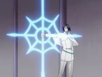
~The Bounts are a clan of Human beings with high spiritual energy and special powers. They were accidentally created by Shinigami scientists trying to create eternal life. Bounts consume the souls of Human to survive; theoretically, a Bount could live forever by doing so. Although they have a strict rule to consume only the souls of the dead, the final group of Bounts chose to drain souls from living Humans in order to become more powerful. Each Bount uses a "Doll" in combat, a type of familiar spirit possessing its own unique special abilities. If the doll is destroyed, its owner is destroyed as well.
~A plus is a benign spirit of a Human that has died.[9]A chain, known as the Chain of Fate, protrudes from the chest. This chain originally connected the Plus to their living body, but is severed upon death. Occasionally it binds the Plus to a location, object or person that they felt close to in life.[10] Normally, pluses are sent to Soul Society by Shinigami, but if the Chain of Fate is corroded entirely before this can be done, the Plus will become a Hollow.[10] If the Chain of Fate is torn out deliberately, this also leads to spiritual degradation.[10]
~Shinigami are souls with inner spiritual power, recruited from the ranks of the residents and nobility of Soul Society. Like all spirits, they cannot be detected by normal Humans. Shinigami use their Zanpakutō, supernatural swords that are the manifestation of their owners' power, to perform soul burials on Pluses.[9] Shinigami also use Zanpakutō and magic known as Kidō to fight Hollows.[9]
~A group of Shinigami who have also obtained Hollow powers through "illegal" means, gaining removable masks and access to certain Hollow abilities.
~The Hollows are evil spirits who normally reside in Hueco Mundo, but travel to the Human World to feed on the souls of the living and dead alike. Like Shinigami, Hollows are made of spiritual matter and cannot be detected by ordinary Humans. While the majority of Hollows can be overcome by the average Shinigami, there are some which surpass even the most elite Shinigami in strength. All normal Hollows wear white masks and have a hole where their heart used to be.[10]
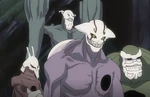
~Arrancar are an evolution of Hollows that have broken off part of their Hollow mask. By shattering their masks, these Hollows regain the ability to reason, sometimes obtain a Humanoid form, and gain access to Shinigami-esque powers, such as a Zanpakutō of their own.[1
~The spirit embodying a Shinigami's Zanpakutō that resides within their master's inner world. A Zanpakutō Spirit is a part of their Shinigami's soul, and their appearance and abilities are a reflection of this. They exist in tandem with their master; they are born alongside their Shinigami, and die with them.[12] A Zanpakutō Spirit's power is separate from that of their owner, and when a Shinigami draws on this power in addition to their own, their Zanpakutō will become even stronger.[13] They dwell within the inner worlds of their Shinigami masters.[1
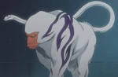
~Zanpakutō spirits who have lost their owners and now wander, lost and confused.[1
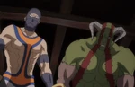
~The Kushanāda are the guardians of Hell.[19]
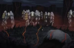
~Artificial souls are a type of soul mass-produced by the Shinigami.[15] Issued in pill form, they are used to force Shinigami out of their Gigai during protracted stays in the Human World, and also to evict pluses that refuse to leave their bodies after death.[15] They come with a pre-programmed personality that animates the host body until the owner returns.[15]
~A series of experimental souls authorized and created by Shinigami researchers.[16] Known as Modified Souls, these were meant to hunt Hollows by possessing soulless Human bodies and supercharging a particular aspect of them (for example, strength or speed).[16] The Shinigami decided to scrap the project due to the inhumanity of forcing dead bodies to fight, and ordered the destruction of all modified souls.[16]
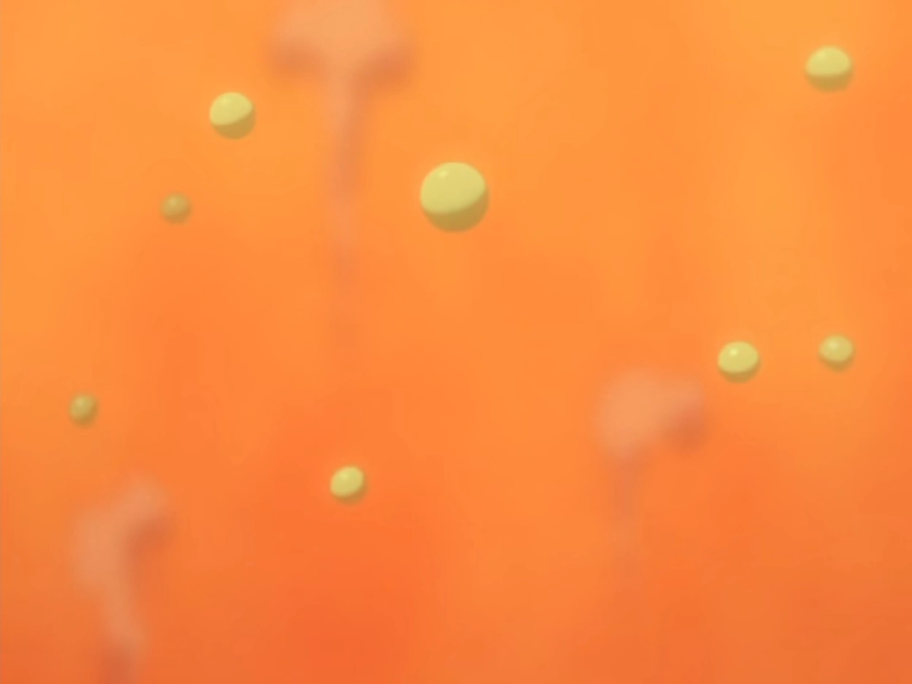
~"Transcendent Beings" are beings who, through various means, have ascended past the limits of the other races. Such examples include Adnyeus the Soul King, his son Yhwach through absorbing the Soul King's powers, Sousuke Aizen through the Hogyoku, and Ichigo Kurosaki due to being a hybrid of all races.
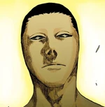
the list of oragnisation that lives within the universe of the bleach.
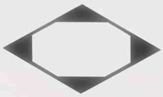
The Gotei 13 (護廷十三隊, Goteijūsantai; lit. "13 Division Imperial Guards"; Viz "Thirteen Court Guard Companies") is the primary military branch of Soul Society and the main military organization most Shinigami join after graduating from the Shin'ō Academy.
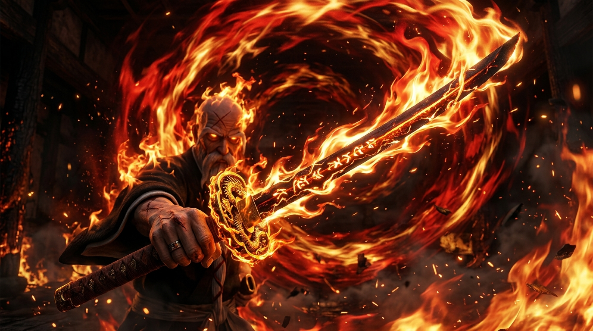

")
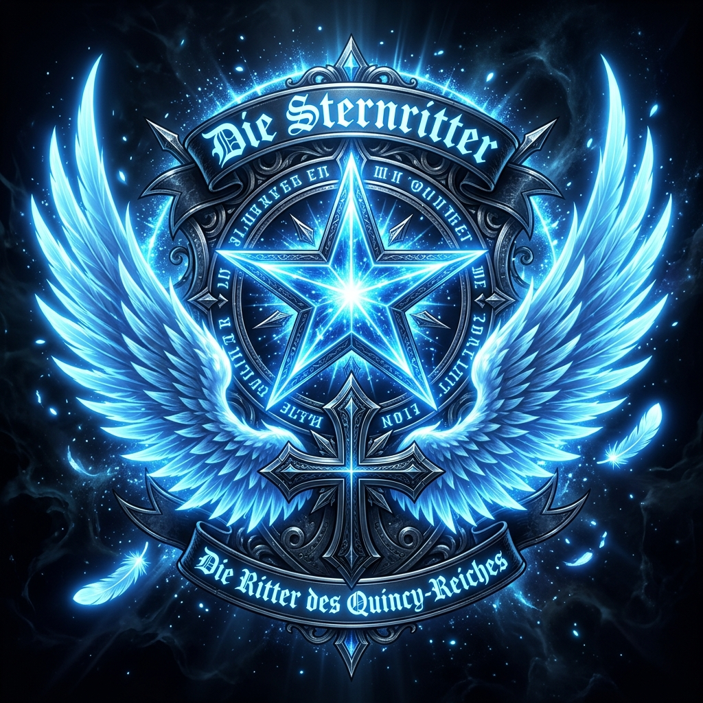
The Sternritter (星十字騎士団, Shuternrittā; lit. "Star Cross Knight Order") are an elite military order of the Wandenreich army. Comprising 26 exceptionally powerful Quincy warriors, each is engraved with a sacred Schrift (letter) designating a lethal divine ability granted directly by Emperor Yhwach through a soul-carving blood ritual.
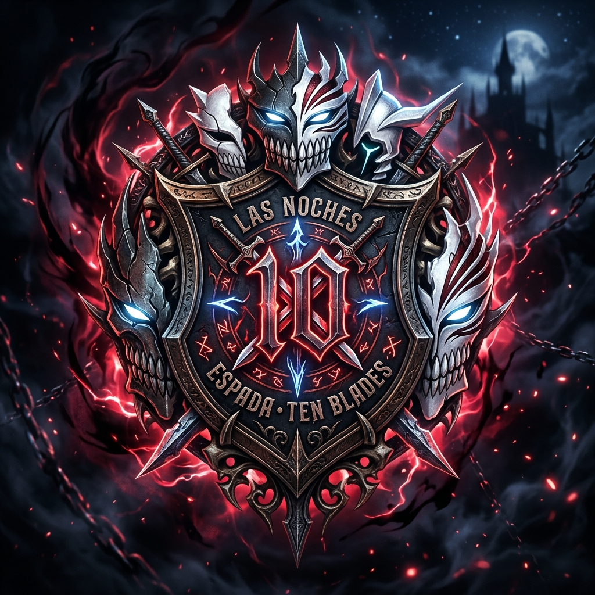
The Espada (十刃, Esupāda; Spanish for "Sword", Japanese for "Ten Blades") are the ten supreme Arrancar in Sōsuke Aizen's army, ranked 0 through 9 by order of raw destructive spiritual pressure (Reiatsu). Wielding devastating Resurrección releases, each Espada represents a primal aspect of human demise and commands their own dedicated Fracción legion within Las Noches.
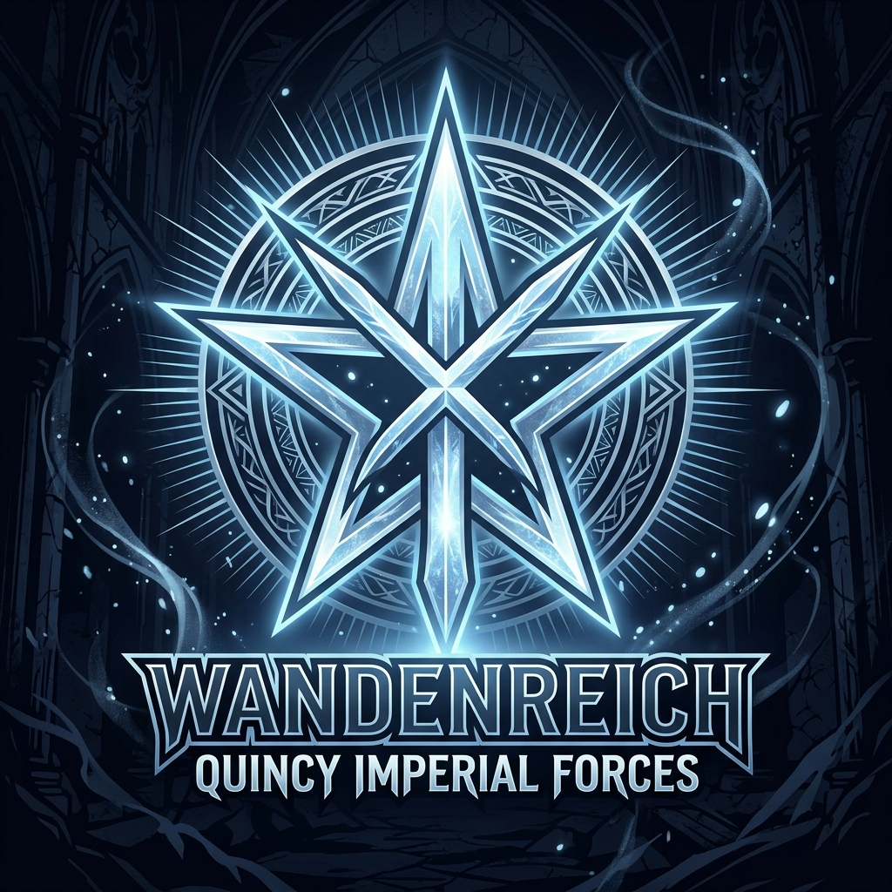
The Wandenreich (見えざる帝国, Vandenshiseru; lit. "Invisible Empire") is the hidden totalitarian empire of the Quincy. Following their catastrophic defeat against the Gotei 13 a millennium ago, survivors escaped into the dimensional shadows of Seireitei (Schatten Bereich), forging a reishi metropolis while preparing for the Thousand-Year Blood War.
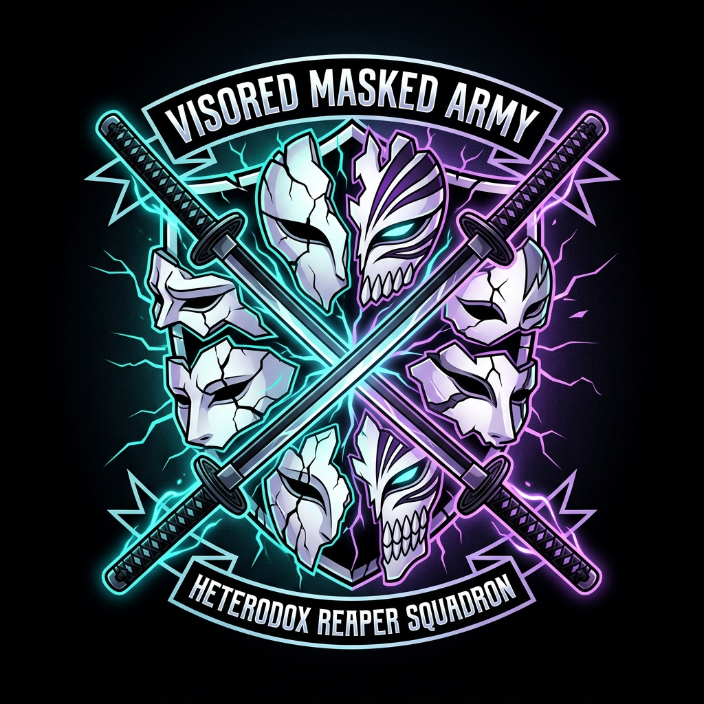
The Visored (仮面の軍勢, Vaizādo; lit. "Masked Army") are a brotherhood of former high-ranking Gotei 13 Captains and Lieutenants who were unlawfully subjected to Sōsuke Aizen's illicit Hollowfication experiments over a century ago. Banished from Soul Society, they concealed themselves in the Human World, mastering dual Shinigami-Hollow combat and donning indestructible Hollow masks with lethal Cero bursts.
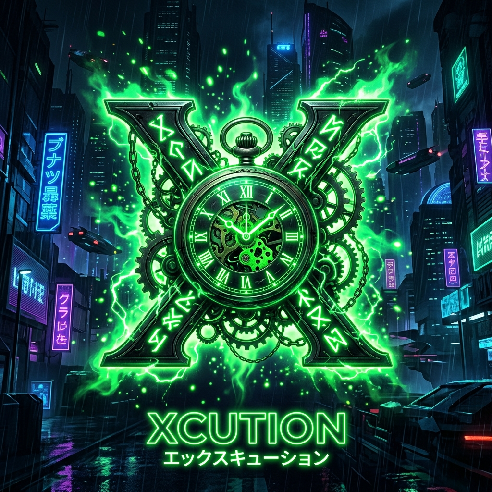
Xcution (エクスキューション, Ekusukyūshon) is an underground society of Fullbringers based in Naruki City and Karakura Town. Formed by Kūgo Ginjō, the world's very first Substitute Soul Reaper, the organization gathers spiritually aware humans born with Hollow reiryoku in order to pool, trade, and ultimately magnify their relic-manipulating Fullbring powers.
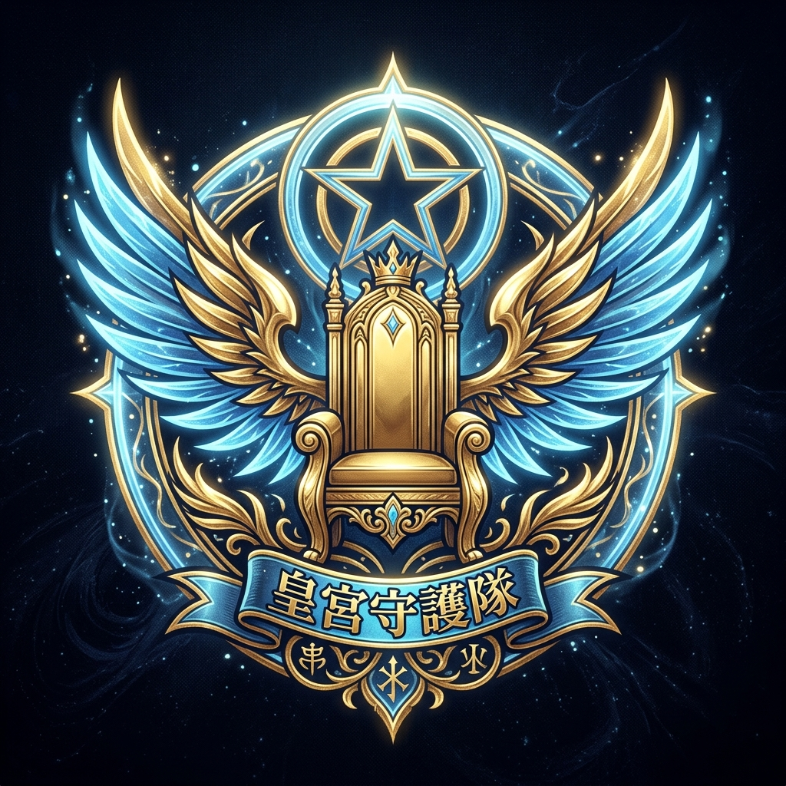
The Schutzstaffel (親衛隊, Shutsshutafferu; lit. "Imperial Guards") are Emperor Yhwach's most revered personal royal guard. Chosen from the apex of the Sternritter, these four transcendental Quincy warriors wield conceptual godlike miracles, immortal regeneration, and unstoppable absolute attacks, serving as the final barrier between invaders and the Soul King.
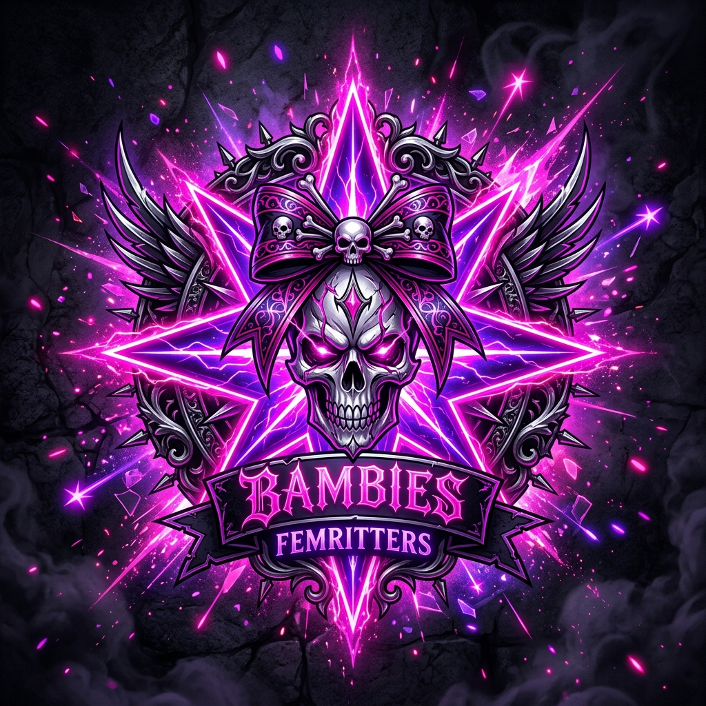
The Bambies (バンビーズ, Banbīzu; also known as the Femritters) are an infamous vanguard squad formed by five lethal female Sternritter under the leadership of Bambietta Basterbine. Known for their unpredictable chaotic energy, explosive destructive potency, and coordinated group onslaughts, they wreaked unprecedented havoc across the Seireitei during the Quincy invasions.